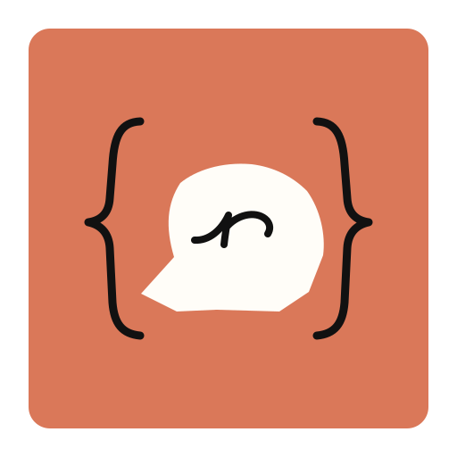
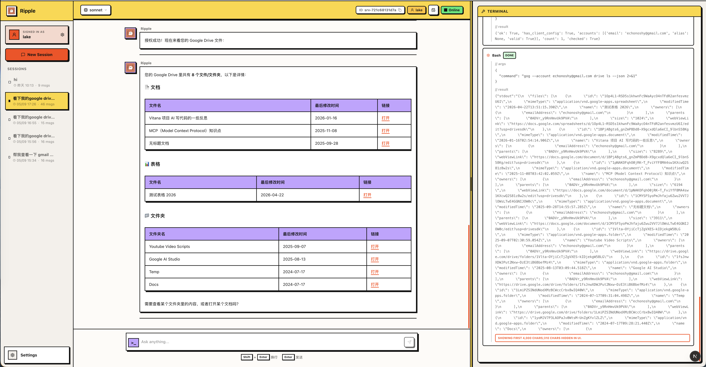

Agentic loop
多轮对话、工具调用、状态转换和停止条件共同组成主循环。

RippleWIP Agent Runtime
一个运行在 Codex app-server 之上的 Rust Agent 控制面。
Ripple 管理 user sandbox、session、connector auth、skill manifest、approval bridge 和统一 `/v1` API， 让一次提问可以稳定地扩展成可追踪、可验证的执行过程。

What makes Ripple different
多轮对话、工具调用、状态转换和停止条件共同组成主循环。
用 Markdown + YAML frontmatter 定义可复用任务模板和领域流程。
在工具调用前后做验证、拦截和权限判断，让执行链路更可控。
以 user_id 隔离长期 workspace，同一用户的多个 session 共享上下文。
How it works
Server 根据 user_id 准备 sandbox、会话状态和可用工具。
核心 loop 读取上下文，决定回复、调用工具或继续推理。
工具系统处理并发、权限、Hook 和执行结果。
消息、任务进度和输出回写到会话，前端持续更新。
Architecture
Quickstart
主页只做介绍，完整配置细节仍然放在 README 和项目文档里。Ripple 当前仍处于快速开发阶段， 接口和机制可能持续调整。
cp config/settings.yaml.sample config/settings.yaml
cargo run -p ripple-server
cd src/interfaces/web
bun run dev